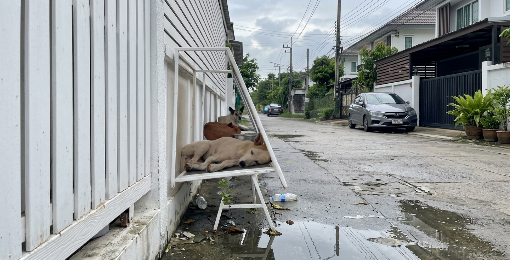

En el primer estudio de población animal realizado por la Facultad de Medicina Veterinaria de la Universidad Católica de Chile se registraron más de 4 millones de perros y gatos callejeros, donde casi 3 millones y medio de estos son perros y el resto se trata de gatos. La mayor concentración de estos reside en la Región Metropolitana, la cual posee la mayor densidad de microbasurales en todo el país.
Esta realidad se encuentra principalmente en sectores como La Pintana, Renca y La Cisterna, donde los animales abandonados se ven obligados a subsistir en microbasurales. Estos afectan gravemente su salud: se convierten en su única fuente de alimento, lo que los expone a ingerir desechos tóxicos, plásticos y comida descompuesta, provocando severas infecciones gastrointestinales y envenenamientos. Además, la acumulación de escombros, vidrios y fierros oxidados les causa heridas y lesiones físicas expuestas que, al estar en contacto directo con la suciedad y vectores como ratas y pulgas, se transforman rápidamente en infecciones cutáneas y enfermedades parasitarias letales.
Frente a este escenario, este proyecto de ciencia ciudadana surge como una respuesta urgente a la pregunta: ¿Cómo afectan los microbasurales a la salud de perros y gatos callejeros en la comuna de La Cisterna?
La iniciativa funciona como una solución a corto plazo frente a la problemática de los microbasurales y el bienestar animal, promoviendo la participación activa de los vecinos y voluntarios para transformar estos espacios insalubres e inseguros en entornos limpios y saludables.
El proyecto se centra en una plataforma web interactiva que sirve como canal de ciencia ciudadana; a través de ella, la ciudadanía reporta y geolocaliza los microbasurales junto con imágenes de los perros y gatos vistos en el sector que se encuentren en peligro y en mal estado de salud. De esta manera se mantendrá un registro constante sobre las zonas donde se encuentran perros o gatos callejeros siendo directamente afectados por los microbasurales, y gracias a la participación directa de la comunidad se podrán detectar las soluciones más eficientes para ayudar a perros y gatos callejeros a un largo plazo, permitiendo a la comunidad estudiar un problema que los rodea constantemente.
Una vez recopilados los datos, se realizará una coordinación con la municipalidad de la comuna para limpiar el microbasural, permitiendo además que un equipo técnico evalúe y atienda de urgencia el deteriorado estado de salud de los animales rescatados, manteniendo un registro sobre qué factores afectan en mayor medida a estos.
Finalmente, el proyecto cierra el ciclo de recuperación mediante la rehabilitación y la búsqueda de hogares definitivos. Los animales rescatados son trasladados a un espacio seguro donde se reduce al mínimo el riesgo de nuevas infecciones o lesiones, y sus perfiles son publicados en un apartado de adopción responsable dentro de la misma página web. De este modo, la iniciativa no solo recopila valiosos datos científicos sobre el impacto ambiental en la fauna, sino que también ofrece una solución real, visible, humana y comunitaria para la comuna.